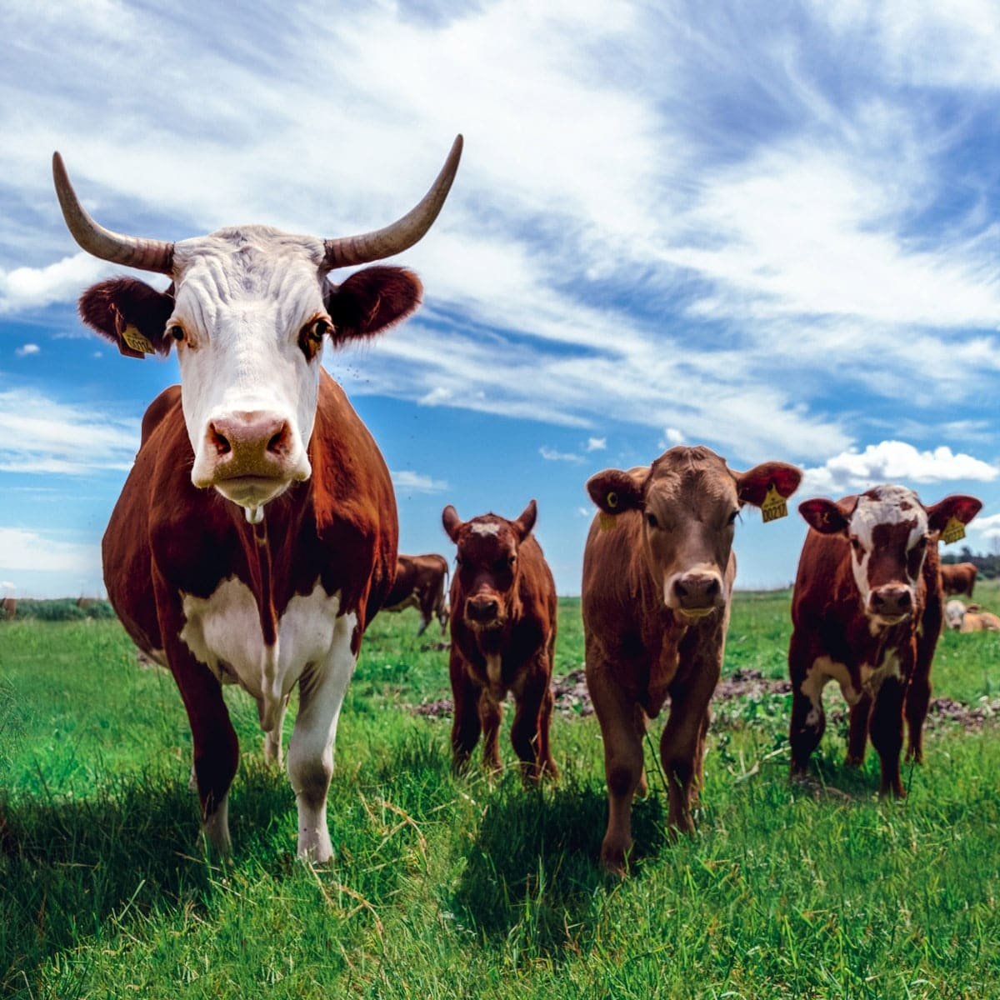
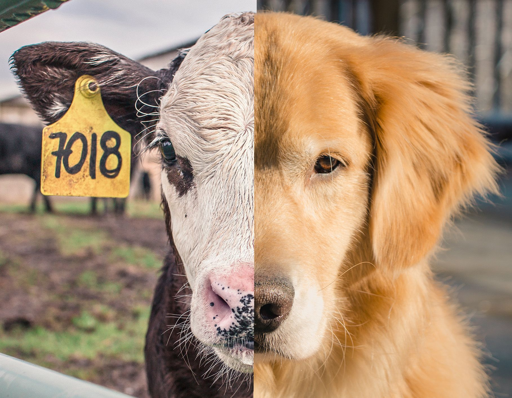
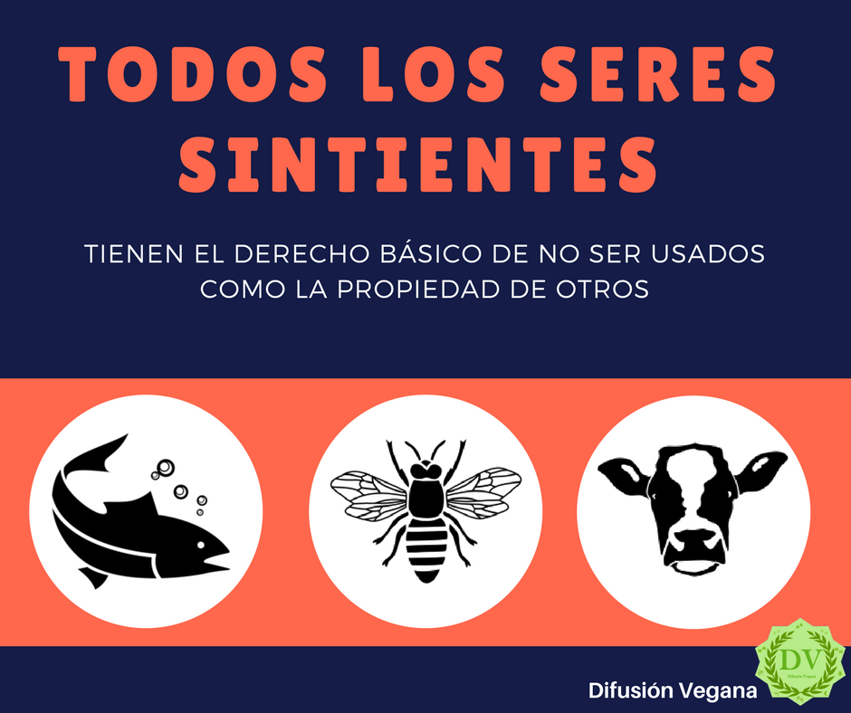

Lo cierto es que se tienen evidencias de personas que decidieron no consumir ningún tipo de producto animal hace más de 2000 años. Ya en la Antigua Grecia, Pitágoras abogaba por la compasión hacia el resto de especies y seguía lo que podría ser descrito como una dieta vegetariana. Buddha solía debatir sobre este tipo de dieta y la incluía dentro de su doctrina “ahimsa” (no violencia) como paso fundamental para lograr la elevación de la conciencia. Genios como Albert Einstein, Nikola Tesla, Leonardo da Vinci e importantes figuras literarias de la talla de Margaret Fuller o el dramaturgo y poeta español Miguel de Cervantes también practicaban el vegetarianismo y condenaban el sacrificio de animales como forma de alimentación.
Fue en 1944 cuando Donald Watson, en una reunión organizada junto a su mujer Elsie Shrigley y otros cuatro compañeros que también seguían dietas vegetarianas estrictas consideraban necesario establecer una nueva palabra más específica que les definiera y diferenciara de los ovolactovegetarianos.
El veganismo es una manera de vivir dedicada a evitar causar daños a animales no humanos en la medida en que esto es posible. Esto incluye lo que hacemos de manera directa, como cazar o pescar. Pero, más importante (puesto que afecta a muchos más animales), también incluye lo que promovemos con nuestro consumo.
Los animales son asesinados y se les hace sufrir de manera habitual en las granjas y mataderos. Esto ocurre porque existe una demanda de productos de origen animal, especialmente productos alimenticios. El veganismo supone no consumir estos productos para no dañar a los animales en el proceso.

El veganismo transmite un mensaje de respeto hacia todos los seres sintientes.
Las personas veganas ven a todos los animales sintientes como seres a los que deberíamos respetar, y no como objetos para nuestro uso.
La ética es una reflexión crítica sobre cómo deberíamos actuar y por qué. La ética animal es el campo de la ética que trata cómo y por qué deberíamos tomar a los animales no humanos en cuenta en nuestras decisiones morales. Todas las teorías éticas aceptadas de manera más amplia apoyan una defensa de la consideración moral de los animales no humanos y el rechazo del especismo (la discriminación de los animales no humanos). Los diferentes argumentos empleados en todas estas teorías llegan a la misma conclusión: deberíamos tener los intereses de todos los seres sintientes en cuenta. Esto es porque se aplican de manera universal, y no solo a alguna teoría en particular. Algunas de las teorías:
En el mundo donde vivimos hay muchos tipos de discriminación. Esto ocurre cuando se da a alguien menos consideración moral que a otro, o se le trata peor que a otros por una razón injustificada. Existe discriminación contra determinados seres humanos basada en su sexo, color de piel, preferencia sexual, y por muchas otras razones.
Cuando tenemos a alguien en consideración moral, sencillamente tenemos en cuenta cómo ese individuo será afectado por nuestras acciones y omisiones, actitudes y decisiones. La consideración moral no necesariamente se aplica solamente a seres sintientes (conscientes).
Hay quienes dan consideración moral a cosas como los ecosistemas o las especies, pero la consideración moral en general se da solamente a seres conscientes. Podemos, y lo hacemos, dar mayor o menor consideración moral a algunos seres que a otros. El especismo es dar a los diferentes seres una diferente consideración moral por razones injustas.
Quienes son discriminados son a menudo explotados. Es posible discriminar a otros, pero tratarlos bien. Sin embargo, es discriminatorio tratar a alguien menos bien de lo que tratamos a otros por razones arbitrarias y, por tanto, injustas, como el color de piel o el sexo.
El especismo es una forma de discriminación hacia quienes no pertenecen a determinada especie. En la mayoría de sociedades humanas se considera completamente normal discriminar a los animales de otras especies.
La manera en que esta discriminación ocurre y su gravedad difiere en cada lugar, y determinados animales son tratados peor en algunos lugares que en otros. Por ejemplo, los perros, las vacas y los delfines son tratados de manera muy diferente en algunas sociedades que en otras. Una cosa que la mayoría de sociedades tienen en común es que discriminan de maneras muy perjudiciales a, al menos, los animales de algunas especies.
La discriminación especista es tan habitual que la mayoría de seres humanos no piensa en cuestionarla excepto en casos donde el tipo o grado de discriminación es inusual. Como resultado, los seres humanos explotan a los animales no humanos en el curso de la vida diaria, usándolos como recursos. Esto ocurre de varias maneras. Los animales no humanos son consumidos como comida, usados para vestimenta, atormentados y matados por diversión, explotados como fuerza de trabajo, y criados y matados para que partes de su cuerpo sean usados como materiales en cosméticos y otros productos de consumo. Son, básicamente, esclavos.
Incluso cuando los animales no son explotados, son discriminados porque no son tenidos seriamente en consideración. Los seres humanos tienen diferentes actitudes hacia los demás animales. Hay quienes no los tratan con respeto en absoluto. Una minoría no tiene ninguna preocupación por la manera en que los animales son tratados, y ni siquiera se preocupa cuando los animales son torturados sin motivo.
Una versión menos extrema de esta posición es representada por quienes se oponen a la tortura de animales de algunas maneras inusuales o meramente por diversión, pero no piensan que importe mucho el sufrimiento de los animales mientras que los seres humanos se vean beneficiados por la manera en que tratan a los animales de otras especies.

Hay quienes tratan a los animales con cierto respeto, pero los discriminan y los tratan peor de manera arbitraria por no ser miembros de la especie humana. Lo mismo puede darse en el caso de las actitudes racistas: alguien puede estar en contra de la esclavitud humana, pero ser racista.
Se piensa por lo general que solamente los seres humanos merecen plena consideración moral. Se considera aceptable a menudo dañar a un animal si supondrá algún beneficio para los seres humanos, con independencia de lo pequeño que sea ese beneficio. E incluso cuando se considera bueno ayudar a los humanos que lo necesitan, cuando un animal no humano necesita ayuda es a menudo dejado a su suerte. Esto ocurre en particular en el caso de los animales que viven en la naturaleza.
Es importante resaltar que no es necesario odiar o querer hacer daño a alguien para discriminarlo, como tampoco es necesario tener un carácter sádico. La discriminación de los animales no humanos es simplemente una cuestión de no dar importancia al daño o beneficio que podemos producirle a consecuencia de nuestro comportamiento hacia ellos, en casos donde sí tomaríamos en consideración este daño o beneficio hacia los seres humanos. Además, algunos animales no son discriminados en comparación con los seres humanos, sino en comparación con otros animales no humanos. Por ejemplo, se puede tener más respeto por perros que por cerdos, o por mamíferos que por otros animales, incluso en situaciones donde los animales menos respetados serán dañados como resultado. Por ejemplo, rechazar el uso de perros y gatos como comida (una práctica aceptada en algunos países), pero aceptar el consumo de pollos y peces, por ejemplo.
Esta es otra forma de discriminación especista, puesto que todos los animales sintientes tienen un interés en no ser dañados, con independencia de la especie a la que pertenezcan. Una forma común de especismo que, en ocasiones, pasa desapercibida es la discriminación de los animales pequeños.
En general, tenemos una disposición psicológica a cuidar menos de los animales pequeños. Mucha gente considera que un caballo merece mayor consideración que, por ejemplo, un ratón, simplemente por su tamaño relativo. Tenemos la tendencia a pensar que los animales pequeños son menos conscientes, cuando esto no es necesariamente así.
No hay razón para justificar el especismo. A veces se sostiene que podemos discriminar a los animales no humanos simplemente porque no son seres humanos. Pero esto es meramente una circunstancia biológica, tal como nacer de un sexo o de otro, o con un cierto color de piel u otro. Es completamente arbitrario, y no puede justificar la discriminación. En ocasiones se dice que los seres humanos sienten mayor simpatía por otros de su misma especie que por los animales no humanos. Pero esto tampoco es una razón para justificar la discriminación contra los animales no humanos. Las personas xenófobas y racistas sienten mayor simpatía por ciertos seres humanos que por otros. Pero esto no justifica su actitud.
Otros aseguran que podemos discriminar a otros animales porque su inteligencia no es como la inteligencia humana. Pero esto no tiene en cuenta el hecho de que muchos seres humanos no tienen el mismo tipo o grado de inteligencia. Los niños pequeños y quienes son cognitivamente discapacitados, por ejemplo, no tienen aquello que normalmente consideramos “inteligencia humana”. Afortunadamente la mayoría se opone a la discriminación contra los seres humanos basada en estos fundamentos. Pero si la inteligencia no es una razón para justificar el trato peor para unos seres humanos que para otros, no puede ser una razón para justificar el trato peor a los animales no humanos.
Cuando se trata de respetar a quienes nos rodean, lo que debemos tener en cuenta es su capacidad de tener experiencias positivas y negativas, como el placer, la satisfacción y el sufrimiento. Por lo tanto, si los animales no humanos pueden sufrir y disfrutar, debemos respetarlos y tratar de no hacerles daño. Negarles respeto porque no pertenecen a nuestra especie o porque no tienen una inteligencia similar a la nuestra es una discriminación arbitraria. Si somos verdaderamente imparciales, rechazaremos toda discriminación, incluyendo la basada en la especie.
¿Por qué la mayoría de seres humanos defiende la discriminación contra los animales no humanos? Las razones son simples. Primero, porque desde la niñez nos han enseñado que los animales de otras especies son seres inferiores que no merecen mucha consideración. Segundo, nos beneficiamos de la explotación de los animales no humanos, concretamente consumiendo sus cuerpos y fluidos como alimento. Por lo tanto, existe un interés por no cuestionar estos beneficios. Nuestras creencias hacen que parezca aceptable explotar otros animales y los beneficios que derivan de esta explotación motivan nuestras creencias. Es cómodo aceptar el conocimiento recibido de que otros animales son inferiores, y aceptar esto como algo “obvio”. Pero este punto de vista no puede justificarse.

El término “interés” se usa para describir lo que es beneficioso para alguien. En otras palabras, promueve lo que es bueno para alguien cuya vida puede ir bien o mal. Decimos “que es de su interés” cuando algo es positivo para alguien. Cuando pensamos sobre cómo actuar, así como cuando participamos en el análisis moral, consideramos el interés de otros a los que deberíamos respetar.
¿Tienen intereses algunos animales no humanos? Como se muestra en nuestro texto sobre sintiencia animal, claramente sí. Pueden sufrir y disfrutar. Sus vidas pueden irles bien o mal. Esto supone que tienen intereses, al igual que los humanos.
Habitualmente, los intereses de los animales no humanos han sido pasados por alto. Solamente se ha garantizado una consideración moral mínima a los animales no humanos. Como resultado, han sido explotados de manera sistemática de formas que les hacen sufrir. Han sido también matados en gran número para dar productos elaborados con sus cuerpos a los humanos.
Además, la vulnerabilidad de los animales a muchas cosas que no están causadas por los humanos ha sido habitualmente pasada por alto como si no fuera nada de lo que preocuparse. Por lo cual, la idea de que deberíamos abstenernos de dañar a los animales no humanos o que deberíamos actuar de una manera que los beneficie ha tenido escasa consideración moral, con solamente unas pocas excepciones.
Sin embargo, en la actualidad, esa posición ha sido fuertemente criticada. Desde los años 70, el campo de la ética animal ha crecido y conseguido un apoyo creciente como un campo de investigación que informa la defensa de los animales no humanos.
Los seres sintientes tienen un interés en tener una existencia feliz. Lo primero que implica es ser feliz, y no sufrir. El sufrimiento es, por definición, un estado mental negativo, por lo cual es dañino para los animales.
Además de tener un interés en no sufrir, los animales necesitan ser capaces de vivir para tener una vida feliz. Muchas personas piensan que los humanos tienen un interés en vivir, pero no los animales no humanos. Hay fuertes razones para rechazar esto.
Muchas personas están de acuerdo con que los animales no humanos tienen interés, pero es una opinión habitualmente aceptada que sus intereses no cuentan mucho. Es importante refutar este mito. Los intereses iguales deberían contar por igual.
Introducción a la sintiencia - El problema de la conciencia
La sintiencia animal ha recibido escasa atención por quienes estudian las características y capacidades de los animales no humanos. Esto es problemático, porque es un tema de gran importancia. La sintiencia es lo que importa cuando analizamos qué seres debemos tener en consideración moral. Debido a esto, necesitamos estudiar qué estructuras físicas son necesarias para la sintiencia, qué seres son sintientes, y qué intereses pueden tener los seres sintientes. Para comprender estos problemas hay varias cuestiones a tratar.
¿Cómo podemos saber si un ser es sintiente o no? Hay varios criterios que los animales no humanos satisfacen, y que nos dan motivos para concluir que lo son.
La sección Sintiencia animal presenta varios argumentos persuasivos para concluir que muchos animales no humanos son sintientes. Además, Intereses animales muestra por qué no puede considerarse que los intereses de los animales sintientes no humanos tengan menos peso que los intereses de los humanos. La conclusión de que ser sintiente es moralmente importante está implícita en ambas conclusiones. Los textos de esta sección clarifican esto.
sinergiaanimal.com/documentales-recomendados